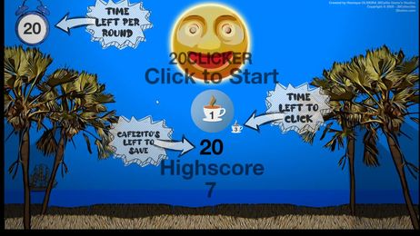

Aguarda...
20Cafés/dia
20Clicker Game

Achas que consegues salvar todos os cafezitos antes que o tempo
acabe, e sem rebentar uma bomba?
Um jogo simples mas extremamente desafiante e que fica
progressivamente mais difícil. Até onde chegas?
Versão 1.0 (Irá ter updates, claro! Tens ideias? Conta-nos nos nosso
Reddit ou Discord!)
{{ buttonMessage }}
{{ gameButtonError }}
Nota: Ao clicar no botão irás fazer download temporário de cerca de 35MB para correr o jogo. Isto poderá levar algum tempo!
Ao abrires o jogo, a animação de fundo do site será pausada. Se saires ou minimizares a janela do jogo, ele será fechado.
 ©2020, 20Cafés/dia - Made by Henrique, Team 20Cafés/dia. Music by
Eduardo ("Azenyr" on YouTube).
©2020, 20Cafés/dia - Made by Henrique, Team 20Cafés/dia. Music by
Eduardo ("Azenyr" on YouTube).